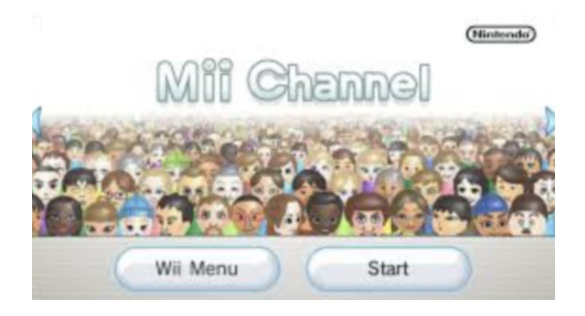
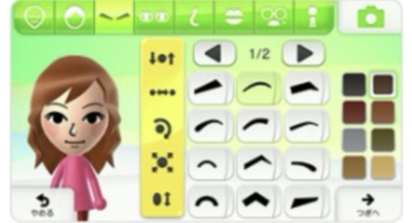

Defining a Generation

The Mii Channel didn't just provide a feature; it defined an era of customizability. For the first time, players weren't just playing as a pre-made hero—they were playing as themselves.
The Art of the Avatar
The Mii Maker interface was a masterpiece of minimalist design. By choosing from a curated set of facial features, hair styles, and personalities, users could create startlingly accurate digital twins or wild, imaginative characters.
This level of creative freedom allowed families to see themselves reflected on the screen together, making gaming a more personal and intimate experience.

A Social Plaza
Beyond creation, the Mii Plaza acted as a digital hangout. Characters would wander, interact, and even travel to other consoles via the internet. It was a precursor to the modern social metaverses we see today.
Viewing your creations in a gallery or watching them cheer in a crowd created a sense of life within the console that had never been felt before.

Defining a Generation


The journey of the Mii continues through every generation of play.
Nintendo Support
1-800-255-3700